Een mooie bibliotheek in de vorm van een boot. Met mooie boeken.
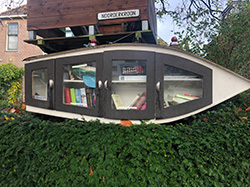
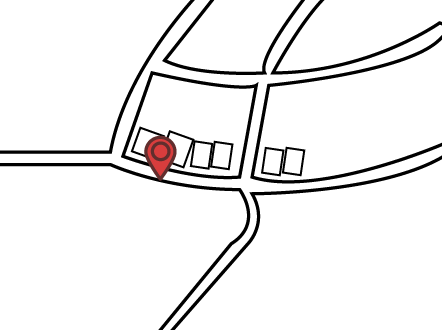
Deze bibliotheek is net een huisje. Hij is vaak goed gevuld met zeker mooie pareltjes.
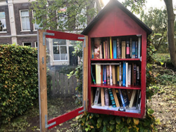
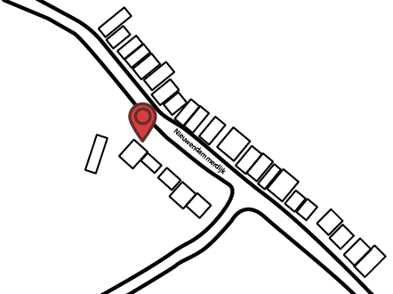
Een bibliotheek met 3 verdiepingen. Ook staat er vaak veel variatie in.
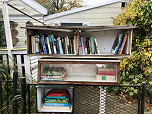
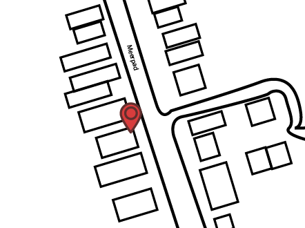
Een brede biliotheek aan de rand van het fietspad.
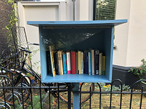
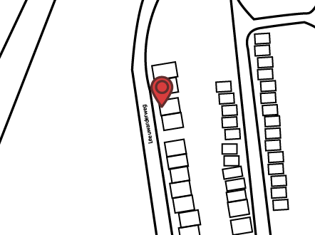
Een simpel huisje aan de rand van het noorderpark.
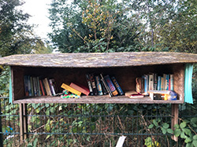
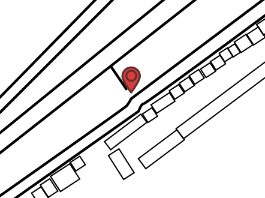
+ VOEG BILIOTHEEK TOE

 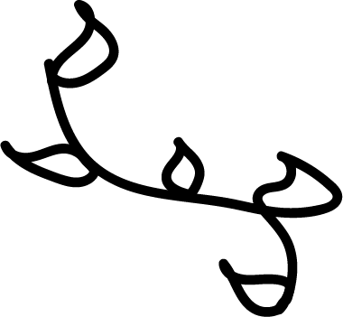
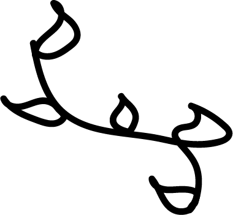